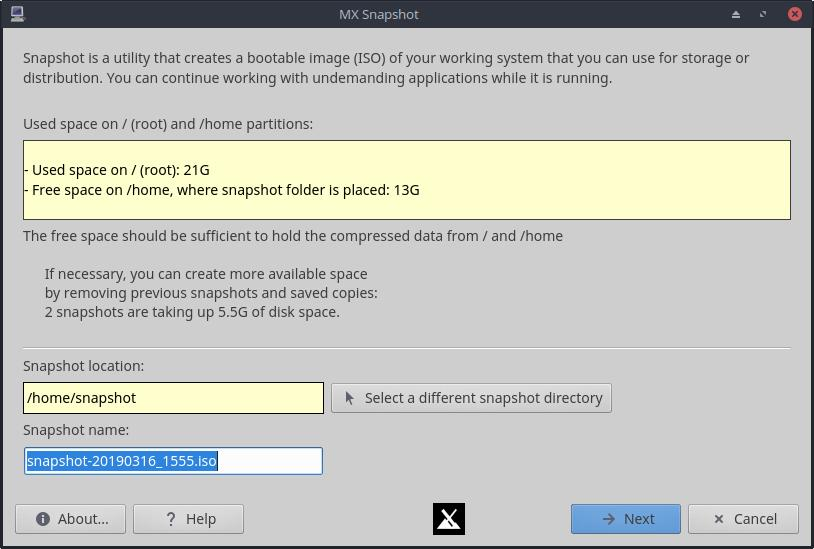
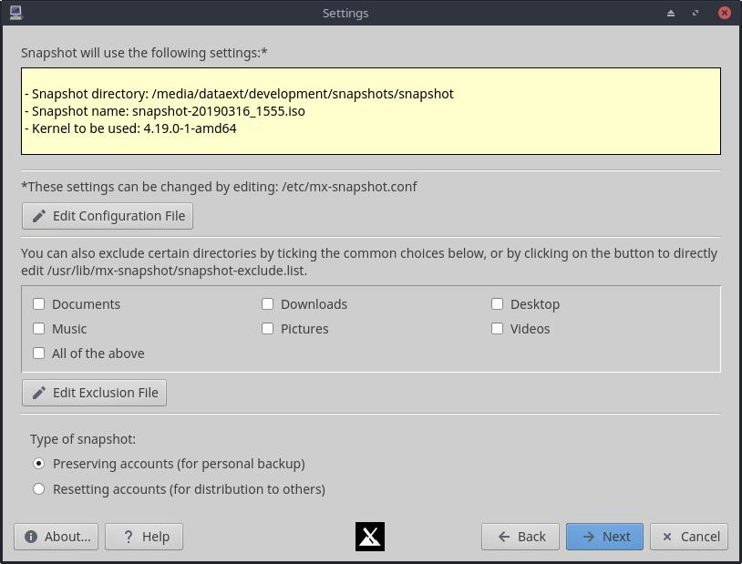

AIDE : MX Instantane
Presentation
MX Instantane (sauvegarde du systeme sous forme d'ISO) est utile dans deux cas de figure :
- Pour realiser un "instantane personnel" et sauvegarder a peu pres tout, utile si vous voulez sauvegarder votre systeme actuel y compris le repertoire home. Seuls quelques fichiers du cache et de journal sont exclus et listes dans le fichier d'exception, consultable depuis le programme. Le programme tente aussi de "generaliser" l'ISO, en supprimant les fichiers specifiques a la machine comme
/etc/fstab et le fichier de configuration de Xorg. Si vous souhaitez utiliser l'ISO comme sauvegarde sur la meme machine, commentez la ligne xorg.conf appropriee dans le fichier d'exclusion. Des cases a cocher permettent aussi d'exclure de gros dossiers comme Telechargements, Bureau, Documents, Videos ou Images.
- Pour realiser un "instantane du systeme" avec toutes les applications installees et sans celles qui ont ete retirees, mais sans le contenu de
/home. C'est ce que nous appelons un instantane "remise a zero de compte" : en plus de generaliser l'ISO, il reinitialise le mot de passe root a "root" et cree un utilisateur demo avec le mot de passe "demo". /home/demo est genere au demarrage et rempli a partir de /etc/skel. Cette option sert a creer une sorte d'ISO derive, utile pour distribuer le systeme a d'autres personnes ou comme base d'une installation personnalisee.
Prerequis

Le premier ecran affiche l'espace disponible avec les parametres par defaut. Il est recommande de reserver un espace libre au moins egal a l'espace utilise par les partitions / et /home. Le fichier ISO cree sera compresse, donc un peu moins peut suffire. Si ce n'est pas le cas, utilisez les boutons du bas pour choisir un repertoire disposant de plus d'espace disque libre.
Options des parametres

- Bouton Editer le fichier de configuration : permet de modifier directement le fichier
mx-snapshot.conf pour definir des reglages speciaux, comme le type de compression. Le fichier est commente pour faciliter la personnalisation.
- Emplacements. Vous pouvez changer l'emplacement du repertoire de l'instantane, ce qui est tres utile si l'emplacement par defaut ne dispose pas de suffisamment d'espace libre.
- Exclusions. Pour reduire la taille de l'ISO et accelerer le processus, vous pouvez exclure des dossiers inutiles. Les exclusions courantes sont disponibles sur l'ecran des parametres et d'autres peuvent etre ajoutees en editant directement le fichier d'exclusions avec le bouton prevu.
- Si vous voulez personnaliser l'apparence du bureau en plus du choix des applications, vous devrez modifier les fichiers de
/etc/skel.
Procedures
La meilleure facon de proceder est de creer l'instantane apres avoir ferme tous les programmes. La creation de l'image utilise de la memoire et du processeur, et cela aide a eviter les fichiers verrouilles ou temporaires inutiles.
- Si vous selectionnez "Reinitialisation des comptes pour distribution a d'autres", vous pouvez continuer a utiliser la machine pour des taches legeres pendant la creation de l'instantane, car
/home n'est pas copie et les fichiers temporaires ou journaux de /var et /run sont exclus.
- Si vous selectionnez "Conserver les comptes", certains fichiers de verrouillage pourraient etre preserves alors qu'ils ne devraient pas l'etre. Certains navigateurs et d'autres programmes creent un verrou pour empecher le lancement d'une seconde instance. Si ces verrous sont sauvegardes par erreur, vous pouvez avoir des problemes au prochain demarrage du programme. Il suffit alors de supprimer le fichier de verrouillage.
Historique de developpement : Fsmithred (Refracta Linux), anticapitalista, BitJam (antiX), Adrian
Licence : ici.
v. 20150809 (v. fr. 20170614)